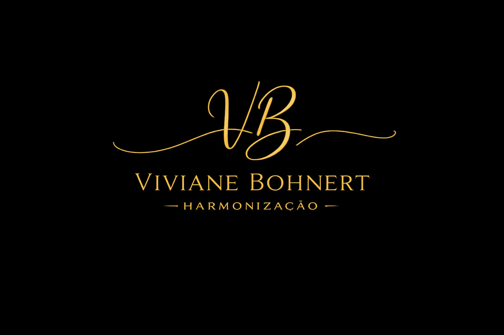

Planejamento personalizado que combina diferentes técnicas para equilibrar proporções, valorizar contornos e realçar a beleza de cada rosto, preservando sua identidade e naturalidade.

HARMONIZAÇÃO FACIAL
Beleza, equilíbrio e naturalidade.
Realçando sua beleza de forma personalizada, elegante e natural.
AGENDAR AVALIAÇÃOQUEM SOU EU
Viviane Bohnert
Sou Viviane Bohnert, Biomédica Esteta e especialista em Estética Avançada. Apaixonada pela estética e pelas possibilidades que ela oferece, encontrei na harmonização facial uma forma de valorizar a beleza com sutileza, respeitando a individualidade e preservando aquilo que torna cada pessoa única.
Acredito que um bom resultado não é aquele que transforma, mas aquele que realça o que cada pessoa já tem de bonito. Por isso, meu trabalho é pautado pela naturalidade, pelo equilíbrio e por planejamentos personalizados, sempre respeitando a anatomia e as proporções de cada rosto.
Minha formação na área da estética é contínua. Busco constante atualização e aperfeiçoamento profissional, aliando conhecimento, técnica e segurança para proporcionar resultados de excelência e uma experiência acolhedora em cada atendimento.
Mais do que realizar procedimentos isolados, gosto de olhar o rosto como um todo, compreender suas necessidades e definir o que realmente faz sentido — sem excessos, sem padronizações e sem perder a essência.
Para mim, harmonizar é exatamente isso: valorizar, não transformar — respeitando a beleza, a identidade e a singularidade que Deus colocou em cada um de nós.
PROCEDIMENTOS
Conheça nossos tratamentos
Tratamento para suavizar linhas de expressão e prevenir marcas causadas pela movimentação muscular, mantendo uma aparência natural e descansada.
Tratamento que estimula a produção natural de colágeno, contribuindo para melhorar a firmeza, a sustentação e a qualidade da pele de forma gradual.
Tratamentos personalizados para melhorar textura, hidratação, viço e uniformidade da pele, promovendo uma aparência mais saudável e revitalizada.
Harmonização Facial
A harmonização facial é um planejamento individualizado que busca promover maior equilíbrio entre as diferentes regiões do rosto, respeitando a anatomia, as proporções e as características de cada pessoa.
Mais do que tratar pontos isolados, o objetivo é avaliar o rosto como um todo e identificar quais intervenções realmente podem contribuir para um resultado mais harmônico e natural.
O planejamento pode envolver diferentes técnicas e áreas, de acordo com as necessidades de cada paciente.
Tratamentos que podem fazer parte do planejamento:
- Preenchimento labial
- Rinomodelação
- Preenchimento de mento
- Contorno mandibular
- Região malar
- Olheiras
- Sulco nasogeniano (“bigode chinês”)
- Linhas de marionete
- Pré-jowls
- Outros pontos de sustentação e contorno facial
Duração Média
De 60 a 180 minutos, dependendo das regiões tratadas e da complexidade do planejamento.
Duração dos Resultados / Manutenção
Os preenchimentos com ácido hialurônico apresentam duração variável, frequentemente entre 9 e 24 meses, conforme o produto, a região e as características individuais. A necessidade de manutenção é avaliada individualmente.
Recuperação
É comum apresentar inchaço, sensibilidade e pequenos hematomas nos primeiros dias. A acomodação dos tecidos e a percepção do resultado final podem levar algumas semanas.
Toxina Botulínica
A toxina botulínica atua temporariamente na musculatura responsável pela formação das linhas de expressão, suavizando marcas e ajudando a prevenir que elas se tornem mais profundas ao longo do tempo.
O tratamento é planejado de forma individualizada, considerando a anatomia, a força muscular e a dinâmica facial de cada paciente.
Pode ser utilizada em diferentes regiões, como testa, glabela, ao redor dos olhos, nariz, sorriso, queixo e pescoço, além de outras indicações que serão avaliadas durante a consulta.
Duração Média
De 30 a 45 minutos, conforme as regiões tratadas.
Duração dos Resultados / Manutenção
Os efeitos costumam durar de 4 a 6 meses, podendo variar conforme a musculatura e a resposta individual. A necessidade de reaplicação é avaliada em consulta.
Recuperação
Retorno imediato às atividades habituais. Podem ocorrer pequenos pontos de vermelhidão, sensibilidade ou hematomas. Os resultados surgem gradualmente em até 15 dias, com avaliação do efeito após esse período.
Bioestímulo de Colágeno
Com o passar do tempo, nosso organismo reduz naturalmente a produção de colágeno, o que contribui para alterações na firmeza, sustentação e qualidade da pele.
Os tratamentos de bioestímulo têm como objetivo estimular o próprio organismo a produzir novas fibras de colágeno, promovendo uma melhora progressiva da pele.
Pode ser indicado para pacientes que desejam melhorar aspectos como flacidez, firmeza, sustentação e qualidade da pele, sempre de acordo com uma avaliação individual.
Duração Média
De 40 a 60 minutos, dependendo das áreas tratadas.
Duração dos Resultados / Manutenção
O número de sessões varia de 1 a 3, com intervalos definidos conforme a indicação e o planejamento individual. Os resultados aparecem gradualmente ao longo dos meses e podem durar até 24 meses, dependendo do bioestimulador utilizado e da resposta de cada organismo.
Recuperação
Pode ocorrer inchaço, sensibilidade ou pequenos hematomas nos primeiros dias. Os cuidados após o procedimento variam conforme o produto e a técnica utilizada.
Qualidade da Pele
Uma pele bonita vai além de contornos e proporções. Textura, hidratação, luminosidade e uniformidade também fazem parte de uma aparência saudável e bem cuidada.
Os tratamentos para qualidade da pele são escolhidos de forma individualizada, considerando as características, necessidades e objetivos de cada paciente.
PDRN
O PDRN é um ativo utilizado em protocolos voltados à regeneração e revitalização da pele. Sua proposta é favorecer os processos de reparação cutânea e contribuir para a melhora da textura, hidratação e aparência global da pele.
Pode ser associado a diferentes protocolos, de acordo com a avaliação e as necessidades individuais.
Microagulhamento
O microagulhamento promove microperfurações controladas na pele, estimulando seus mecanismos naturais de renovação e a produção de colágeno.
Pode ser indicado para melhorar textura, poros aparentes, cicatrizes de acne, linhas finas e irregularidades da pele. O tratamento também pode ser associado a ativos selecionados de acordo com o objetivo de cada protocolo.
Skinbooster
O Skinbooster é um tratamento injetável com ácido hialurônico desenvolvido para proporcionar hidratação profunda e melhorar a qualidade da pele, sem ter como objetivo principal aumentar volume ou modificar os contornos faciais.
É indicado especialmente para peles que apresentam perda de hidratação, viço e elasticidade, contribuindo para uma aparência mais saudável, luminosa e revitalizada.
RESULTADOS
Beleza que respeita sua essência
Confira alguns resultados de tratamentos realizados com cuidado e atenção à naturalidade.
SUA EXPERIÊNCIA
Um cuidado que começa no primeiro encontro.
Cada atendimento é uma oportunidade de compreender suas expectativas, valorizar sua beleza e construir resultados que respeitem sua individualidade.
Acredito que a estética vai além da realização de procedimentos. Ela envolve confiança, atenção aos detalhes e a tranquilidade de saber que cada decisão é pensada especialmente para você.
PRIMEIRA ETAPA
Tudo começa com uma avaliação individualizada
Antes de qualquer procedimento, dedico um momento para conhecer suas expectativas, compreender o que deseja melhorar e realizar uma avaliação cuidadosa das características do seu rosto.
A partir dessa análise, construímos um planejamento personalizado, considerando suas necessidades, prioridades e os tratamentos que realmente fazem sentido para você.
Mais do que indicar procedimentos, meu compromisso é orientar escolhas conscientes e respeitar a sua essência.
SEGUNDA ETAPA
Técnica, segurança e conforto em cada detalhe
Durante o atendimento, cada etapa é conduzida com cuidado, respeitando a anatomia, as proporções e as particularidades de cada paciente.
A escolha das técnicas e dos produtos é feita de forma individualizada, priorizando a segurança, o equilíbrio e resultados naturais.
Para muitas pessoas, o medo da dor é um dos principais motivos para adiar um procedimento estético. Por isso, dedico atenção especial ao conforto durante o atendimento, utilizando técnicas anestésicas quando indicadas e respeitando as necessidades e a sensibilidade de cada paciente.
Meu objetivo é que você se sinta acolhida, segura e confiante durante todo o processo, sabendo que cada detalhe foi cuidadosamente planejado.
Acredito que a excelência está também nos detalhes: na preparação, na precisão dos procedimentos e no respeito ao tempo e às necessidades de cada pessoa.
TERCEIRA ETAPA
Um cuidado que continua após o procedimento
Meu compromisso com cada paciente não termina ao final do atendimento.
As orientações pós-procedimento e o acompanhamento da evolução fazem parte do cuidado, permitindo avaliar os resultados, esclarecer dúvidas e identificar eventuais necessidades de ajustes ou reavaliação.
Porque, para mim, uma boa experiência envolve não apenas o resultado estético, mas também a confiança e a segurança durante toda a jornada.
O cuidado está em cada detalhe.
Uma experiência personalizada, do primeiro encontro ao acompanhamento dos resultados.
CONTATO
Vamos cuidar da sua beleza?
Entre em contato para agendar sua avaliação.
AGENDAR PELO WHATSAPP INSTAGRAM